Agent의 기본구조에서 한단계 더 나아가 advanced topic에 대해서 다루어 보자.
skills는 우리가 설계하는 agent에게 어떠한 기술을 부여하는 것이다. 그게 도구의 사용일 수도 있고, 코드 실행일 수도 있으며 그냥 컴퓨터로 인간이 작업할 수 있는 모든 것들이 포함된다. 처음에는 감이 (저도) 안왔기 때문에 바로 실전으로 들어가보자.
e.g.) openai 최신 모델을 질문하는 예시.
1. user query to agent without skills :
“OpenAI의 최신 모델이 무엇이야?”
이 경우, agent가 저 질문을 답하기 위해서 현재 도구, memory를 전부 고려해서 어떻게 해결해야할지 판단해야한다.
user query to agent with skills:
/check_latest_openai_model를 사용해서, 지금 최신 모델을 알려줄래?
(check_latest_openai_model은 유저가 미리 적어놓은 skill)
→ Agent read skill dir(or file)
→ Do action (use tools or run code ….)
→ response to the user.
이렇게 되면, agent가 어떻게 해결해야할지 방향성을 사용자가 잡아주는 것.
아주 단순하다. 그냥 기술을 어디다가 적어놓고, 저거 읽고 사용해\~
라고 명령하는 방식이다.
만약에 agent를 직접 설계하는 입장이라면, skill dir을 직접 알려주는 식으로 명령을 해야하지만, OPNEAI, ANTROPIC에서 제공하는 완성된 agent는 skill 이름만 말해주면 자동으로 그 스킬을 사용한다.
가장 대표적인, OPENAI의 Agent AI Application platform인, 알트만 형의 CODEX를 살펴보자.
Agent Skills
공식문서를 살펴보면, skill dir이 이런식으로 구성이 되어 있다.
skill을 위한 데이터와 설명 파일 (.md)가 들어있다.
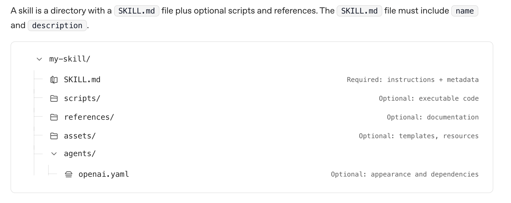
SKILL.md파일이 가장 중요하다. 이 스킬의 이름, 용도, process를 자연어로 정확히 적어주어야 실수하지 않고 LLM이 사용할 수 있다.
---
name: check-openai-latest-model
description: Verify the latest OpenAI model names using live web checks on official OpenAI pages. Use when users ask for "latest/newest/current OpenAI model", model release recency, or model list verification that may have changed recently.
---
# Check OpenAI Latest Model
Use this skill to confirm current OpenAI model information from official web sources.
Prioritize browser-based verification because model availability can change frequently.
## Source Policy
- Use only official OpenAI sources:
- `https://openai.com`
- `https://platform.openai.com`
- `https://help.openai.com`
- Do not rely on third-party summaries for "latest model" claims.
- Prefer pages with explicit publish/update dates or changelog context.
- If sources disagree, report the conflict and include both links.
See [references/official_sources.md](references/official_sources.md).
## Workflow
1. Clarify scope in one line.
- Ask whether user wants API models, ChatGPT models, or both.
- If unspecified, check both and label them separately.
2. Browse official sources live.
- Open model overview/docs pages and release/update pages.
- Capture exact model identifiers as shown on official pages. ...
중요한 점은 5가지가 명확하게 기입되어어야 한다. (굉장히 중요)
- name → 모델이 호출할 스킬 이름
- description → 언제 발동해야 하는지 명확히 정의
- When to Use / Do NOT trigger → 트리거 조건 명확화
- Execution Steps → LLM이 따를 프로세스
- Failure Handling → 실전 안정성
이후에 openai.yaml파일은 이제 skill을 사용할때 이름만 부르면 되기 때문에 그 이름을 무엇으로 할 것인지 그리고 console창에서 뜨는 설명을 기입하는 곳이다.
interface:
display_name: "Check OpenAI Latest Model"
short_description: "Verify newest OpenAI model via official web sources"
default_prompt: "Use web browser steps to verify the latest OpenAI model from official OpenAI pages and report with source links and dates."
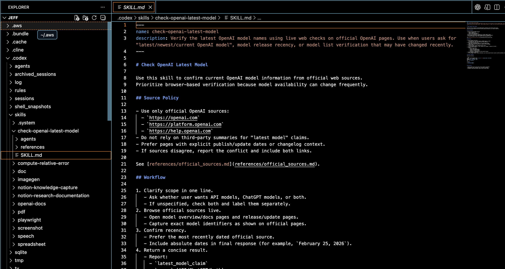
실제 CODEX 코드 내부를 살펴보면,
Dir: skills → check-openai-latest-model 이 존재하고, 내부에 SKILL.md가 존재한다.
(DEMO작업으로는 CODEX UI를 사용하도록 하겠습니다. 이후에 CLI, UI, IDE(cursor) …. 등등 다양한 플랫폼 설명예정, 일단은 skill이 어떤 것인지 간단하게 보여주는 용도로만)
Codex UI에 들어가서 (2026.02기준 mac os만 지원) /ch 을 기입하면 이렇게 생성된 skill이 뜨게 된다.
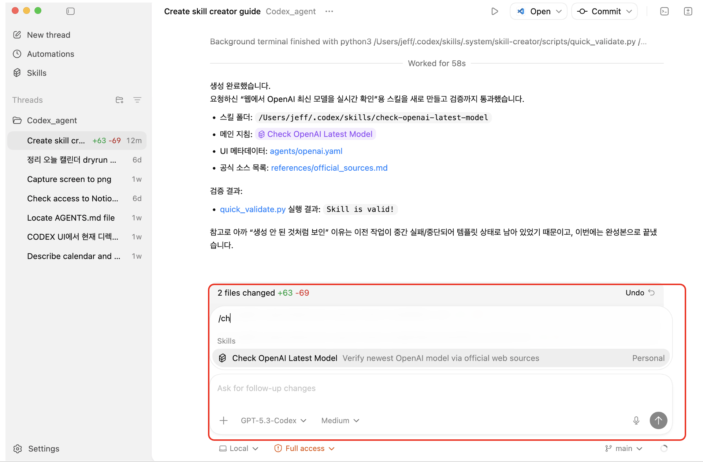
이제 실행을 해보자.
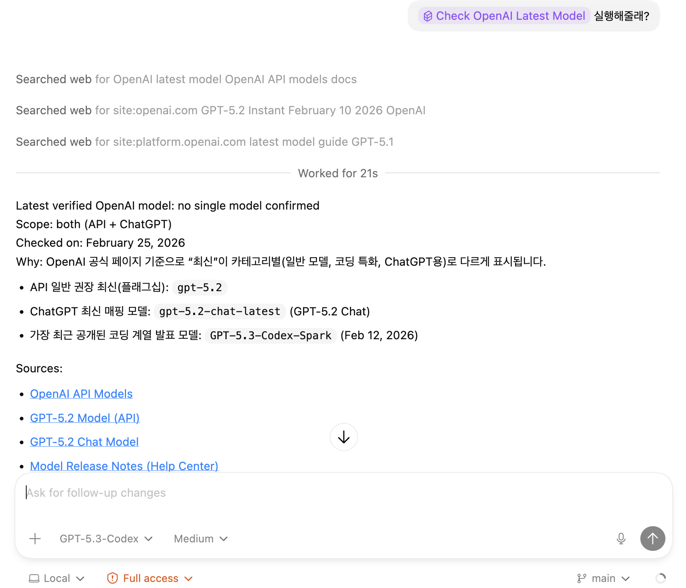
SKILL.md 파일에 적힌대로, OPENAI 공식문서만 참고해서 정보를 전달하는 것을 알 수 있다.
여기서 위의 예시는 사용자가 skill 을 직접 prompt 에서 호출하였다.
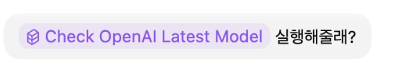
하지만, 만약에 skills이 저장은 되어 있는데 호출은 하지 않고 그냥
User query: “OpenAI 최신 모델 찾아줘”라고 했다면?”
- agent가 skill을 알고 사용할까?
- agent가 skill을 모를까?
그 설정도 CODEX, CLAUDE 모두 따로 옵션으로 유저가 설정 할 수 있다.
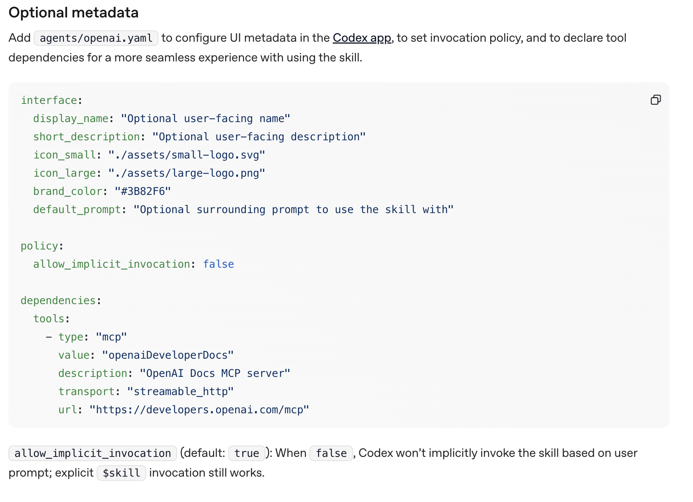
openai.yaml 파일에서, allow_implicit_invocation 을 on/off로 설정할 수 가 있다.
이제 모든 토큰 (돈)과 연결되는 context window 관점에서 살펴보자.
좌측의 경우 skilll.md파일 내용 자체가들어가고, 우측은 현재 가지고 있는 접근가능한 skill들의 이름과 간단한 사용목적만 들어간다.
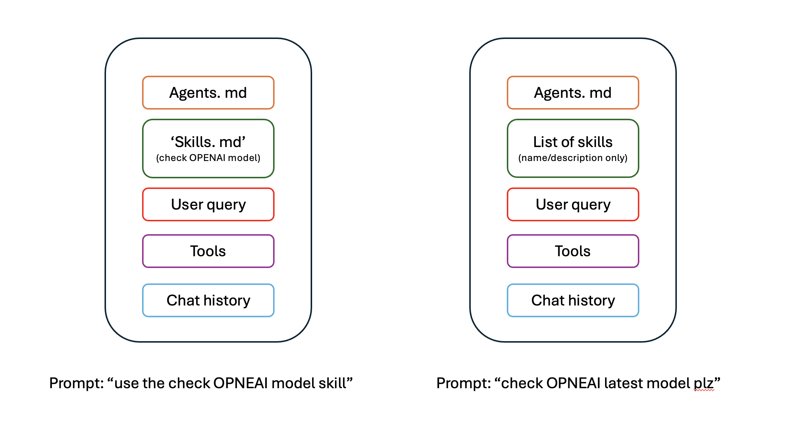
최종적으로 skills의 구조를 정리된 구조로 나타낸 figure이다.
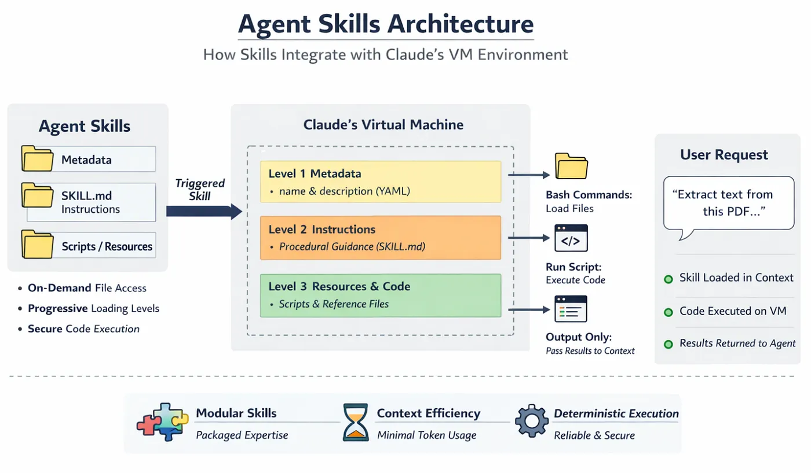
여기서 skills.md 파일이 작업을 하다보면 굉장히 다양한 곳에 여러개가 존재할 것이다.
일단 codex, claude, gemini, cursor 어떤 agent application이던지. skills 작업공간은 이것만 기억하자.
- Application 설치 장소
- Project 공간
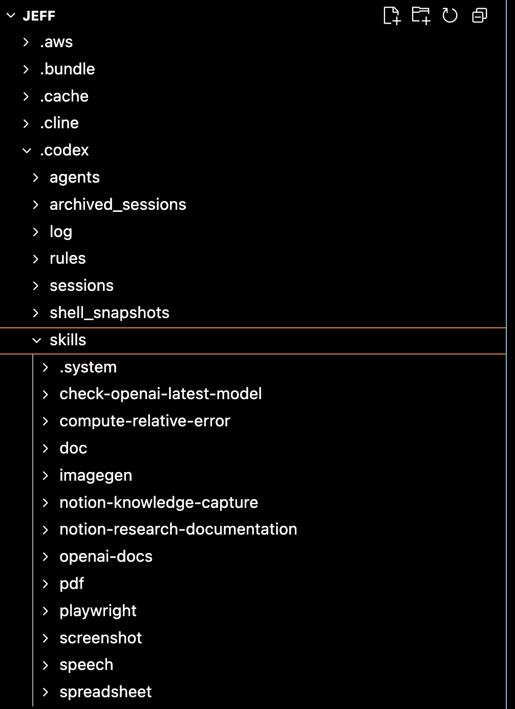
codex를 저는 user directory에 설치를 하였고, 그 내부에 skills라는 폴더가 있다.
안에 보게 되면 굉장히 다양한 Skills들이 이미 만들어져 있는 상황이다. UI로 같은 codex system을 확인하면, 해당 skill들이 사용할 수 있도록 리스트화 되어 있는 것을 확인 할 수 있다.
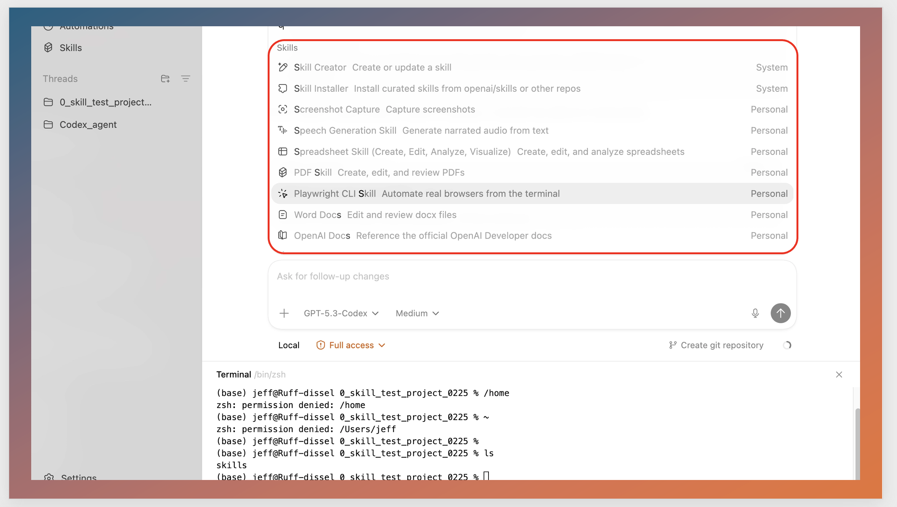
(이 codex의 skills는 어떻게 보면 공공장소 라고 생각하면 된다. 여기에 skills를 만들어 놓으면, 누구나 어디에 있던지 간에 skill을 폴더에서 꺼내서 쓸 수 있다)
내가 진행하고 있는 프로젝트에 따라서 여러 project 폴더가 존재한다. 그리고 그 프로젝트에서 codex를 열게 되면, 해당 프로젝트를 기준으로 항상 작업을 하게 된다.
IDE or CLI 에서 open한 project위치를 기준으로 SKILL.md, AGENTS.md(추후에 설명) 들을 main으로 prompt(context window)에 추가한다는 것.
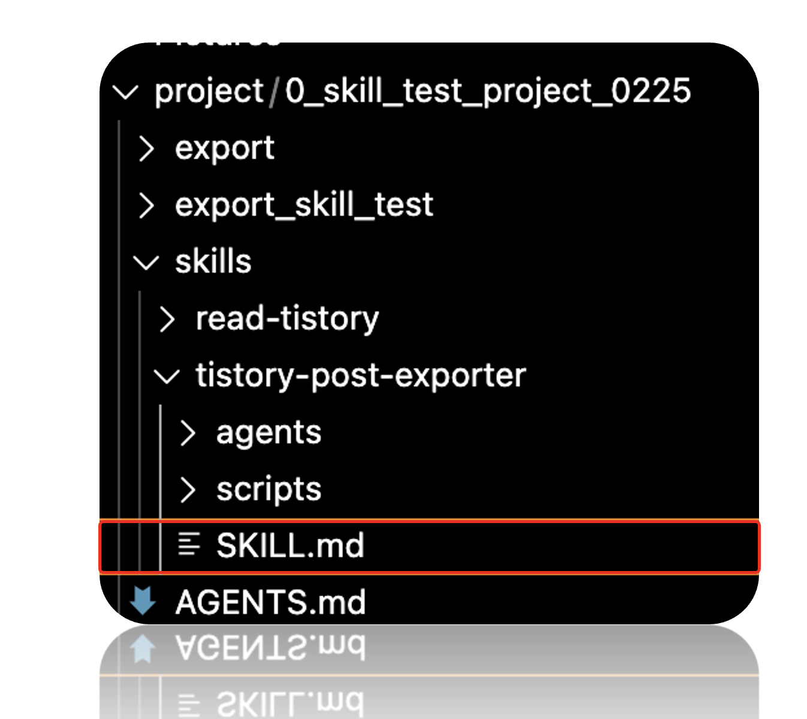
tistory의 블로그 내용을 github -pages로 전부 옮기는 프로젝트를 진행하고자. proejct내부에 스킬들을 생성한 것을 확인 할 수 있다.
(즉 현재 프로젝트에서는 global skill + current dir skill 둘다 사용가능하다는 것)
어떤 방에서 작업을 진행중이라고 하자. 거실에 있는 skill뿐만아니라 방에 있는 skill도 사용 가능하다.
결국 skills는 agent의 생산성을 결정하는 핵심 요소라고 생각한다. 사람도 “할 수 있는 기술”이 많을수록 생산적인 것처럼, agent 역시 마찬가지다.
즉, 스킬이 다양하고, 예리하고, 정확할수록 agent는 더 빠르고 안정적으로 일을 끝낸다. 그리고 그 스킬을 설계하고 쥐어 주는 주체는 결국 우리(사용자/개발자)다.
흥미로운 점은, 최근 agent들은 단순히 스킬을 “사용”하는 수준을 넘어, 주어진 목표를 달성하기 위해 필요한 프로세스를 스스로 구성하고, 경우에 따라서는 새로운 스킬(자동화 절차)을 만들어내는 방향으로 발전하고 있다는 것이다. 이 흐름이 의미하는 바는 명확하다. 앞으로 인간의 역할은 “코드를 직접 작성하는 사람”이라기보다, 무엇을 시켜야 하는지(업무를 어떤 단계로 쪼개고 어떤 기준으로 검증할지)를 설계하는 사람에 더 가까워진다.
더하여, 주어진 문제를 해결하기 위해서 process를 논리적 단계로 분해(Decomposition)하는 능력이 미래의 핵심 스킬이 될 것이다.
그래서 앞으로는 더더욱, 다양한 분야의 흐름과 도메인 지식을 넓게 관찰하고 학습하는 습관이 중요해진다고 느낀다. 예를 들어 주식 자동화 agent를 만든다고 해도, 결국 “무엇을 확인하고 어떤 순서로 판단해야 하는지”라는 프로세스 설계가 먼저 있어야 한다.
정리하면, skill은 agent의 성능을 올리는 ‘레버’이고, 프로세스 설계는 그 레버를 어디에 어떻게 걸지 결정하는 일이다.